29 LLM4MIP solutions are now listed on MIPLIB
MIPLIB’s Best Known Solution records now include LLM4MIP entries for 29 instances—25 improved incumbents and four first feasible solutions.
View detailed results and evidenceCan LLMs help solve open MIPs?
Mixed-integer programming (MIP) is a core modeling tool for planning, scheduling, logistics, energy systems, and many real-world applications. However, MIPs are notoriously hard to solve even with state-of-the-art optimization solvers. We ask whether language models can help make progress by accelerating established solver-based workflows. Large language models (LLMs) have recently shown promise in advancing open problems in mathematics. An unresolved MIP instance can likewise be viewed as an "open problem": its variables, constraints, objective, and data define a verifiable computational open problem.
MIPLIB is a public library of real-world mixed-integer programming instances used to evaluate and compare optimization solvers.
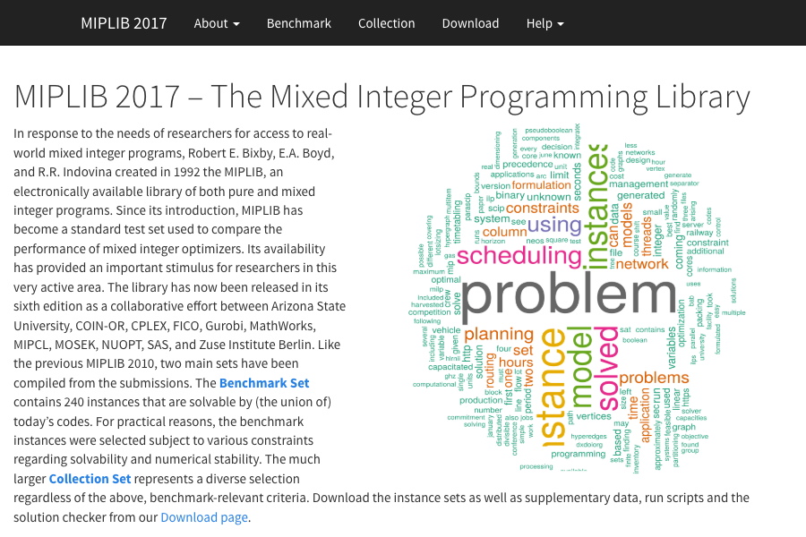
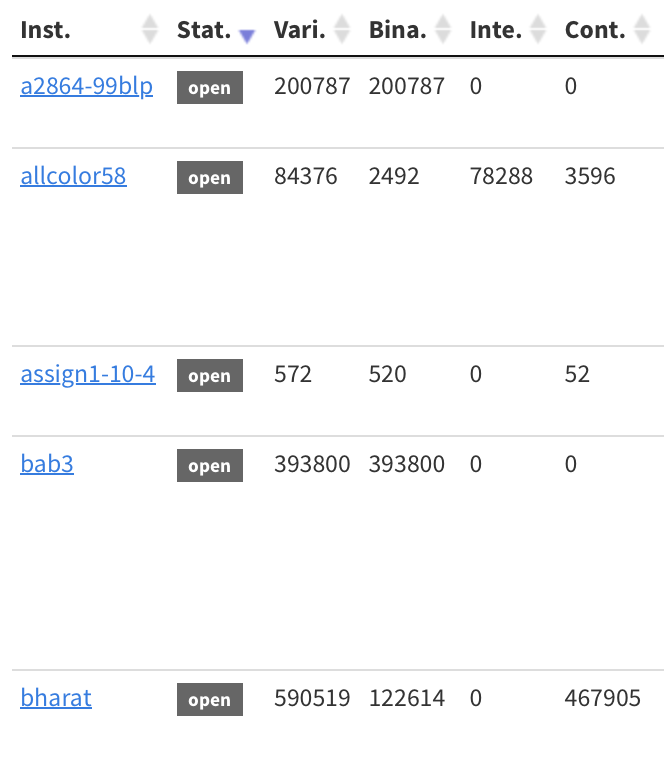
Starting from a benchmark of 217 open MIPLIB instances, we studied 132 with LLM-assisted workflows. LLM reasoning helped search for exploitable structure, primal heuristics, and dual certificates; optimization solvers and independent checks supplied numerical bounds and result verification.
Results on 132 Open MIPLIB instances
| Measure | Count | Explanation |
|---|
Transferable primal and dual skills
We distilled the instance-level analyses into two complementary skills. Each is evaluated against Vanilla prompting and a solver baseline on the same 20 instances.
Primal skill
Find better feasible solutions
Identify useful structure and develop primal heuristics to find or improve incumbents.
Download primal-skillDual skill
Strengthen global bounds
Use structural analysis and solver experiments to develop stronger valid dual bounds.
Download dual-skillExplore the detailed results
Citation
BibTeX · Research website@misc{huang2026llm4mip,
author = {Huang, Yicheng and Gao, Wenzhi and Ge, Dongdong and Udell, Madeleine and Ye, Yinyu},
title = {How Much Can {LLMs} Help Solve {MIPs}?},
year = {2026},
month = sep,
url = {https://llm4mip.github.io/},
note = {Research website. Yicheng Huang and Wenzhi Gao are co-lead authors}
}MIPLIB update ·
LLM4MIP solutions accepted by MIPLIB
MIPLIB’s Best Known Solution records now include LLM4MIP entries for 29 instances: 25 improved incumbents and four first feasible solutions. Each panel contains two figures showing the LLM4MIP entry together with the previously listed solution, where one exists. Expand either panel below; on larger screens, its two figures are shown side by side.
Panel 1 of 2Figures 1–2 · 14 instances · allcolor58 through fhnw-schedule-pairb400
MIPLIB Best Known SolutionsFigure 1 of 4 · 7 instances
allcolor58
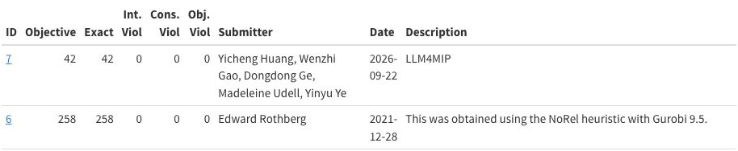
bley_xs1noM
circ10-3
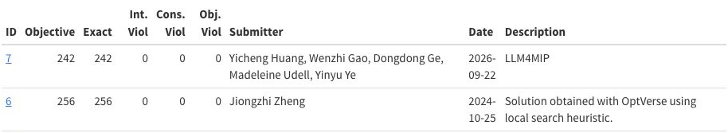
cvrpa-n64k9vrpi
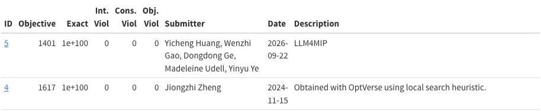
cvrpb-n45k5vrpi
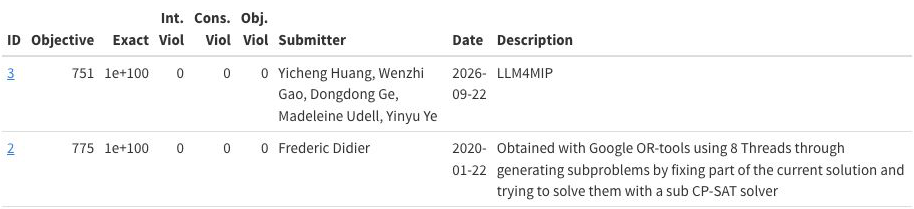
dws012-02
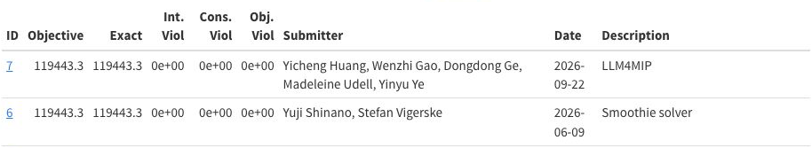
fastxgemm-n3r21s3t6
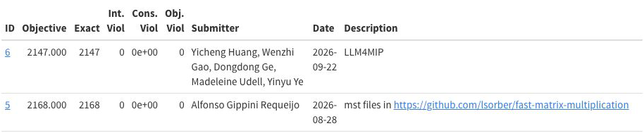
MIPLIB Best Known SolutionsFigure 2 of 4 · 7 instances
fastxgemm-n3r22s4t6
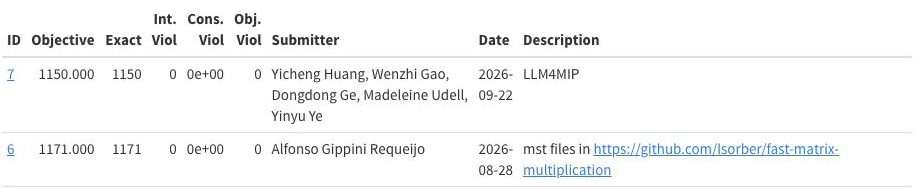
fhnw-binschedule0
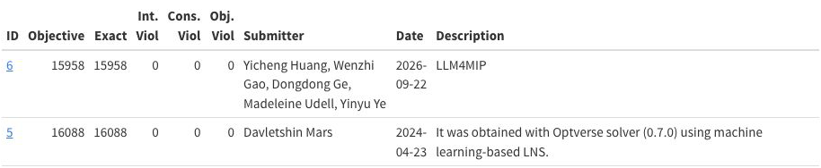
fhnw-binschedule1
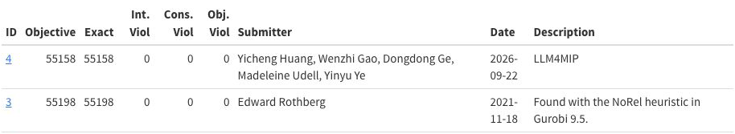
fhnw-schedule-paira200
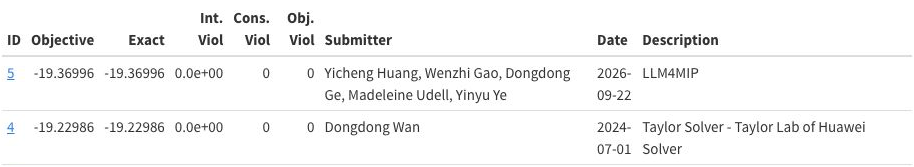
fhnw-schedule-paira400
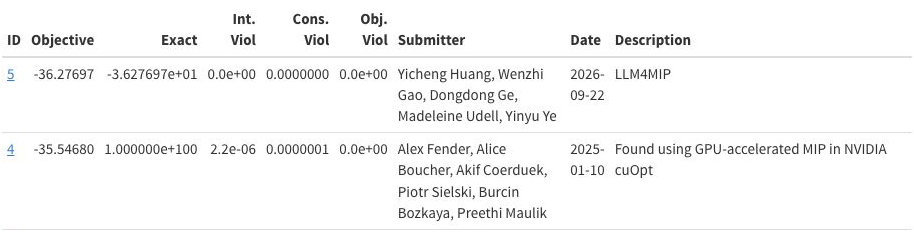
fhnw-schedule-pairb200
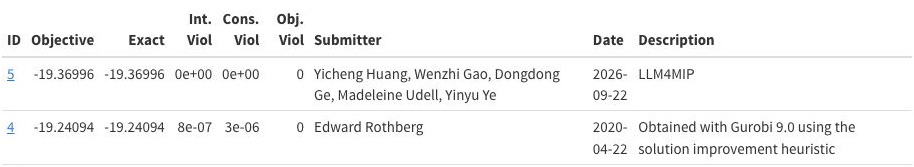
fhnw-schedule-pairb400
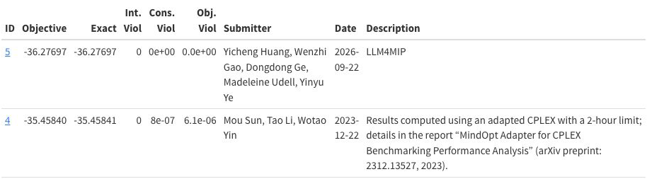
Panel 2 of 2Figures 3–4 · 15 instances · graphdraw-grafo2 through supportcase39
MIPLIB Best Known SolutionsFigure 3 of 4 · 7 instances
graphdraw-grafo2
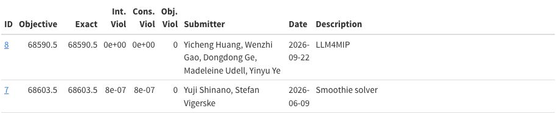
liu
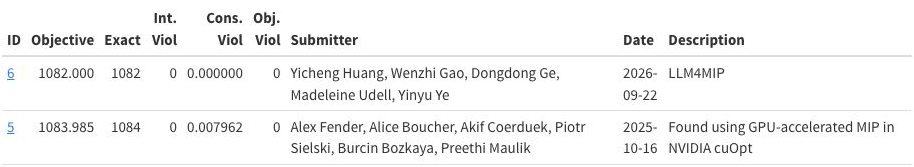
nag
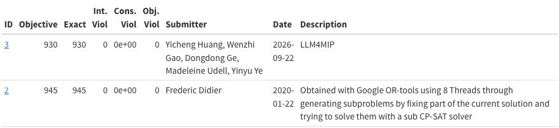
neos-3594536-henty
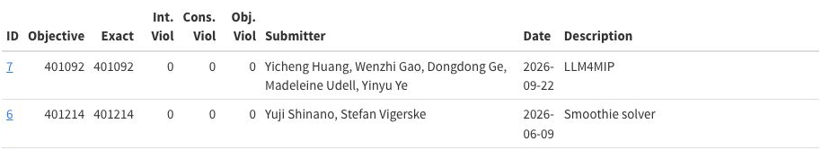
neos-5221106-oparau
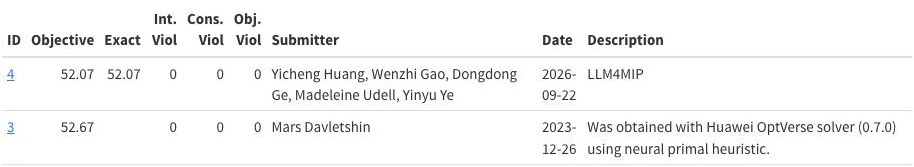
neos-5266653-tugela
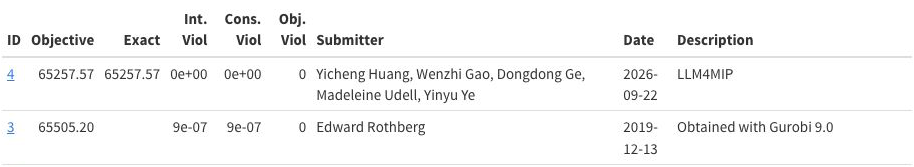
nj1
MIPLIB Best Known SolutionsFigure 4 of 4 · 8 instances
nj2
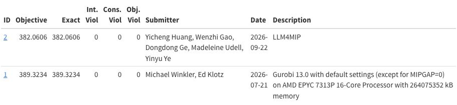
nj3
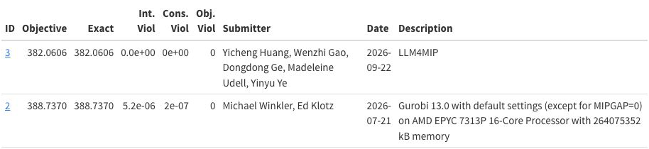
ns1856153
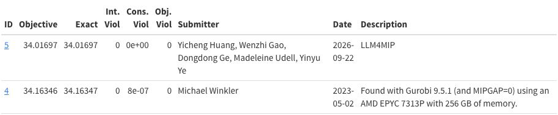
ns1905797
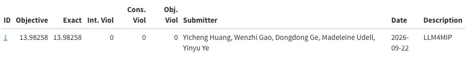
r4l4-02-tree-bounds-50
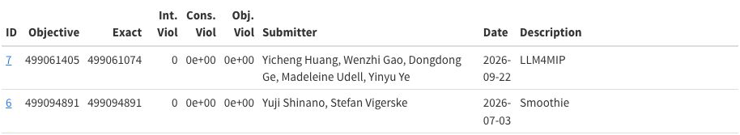
rmine15
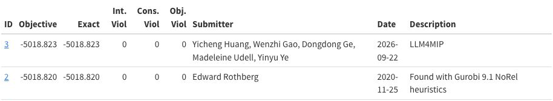
sing17
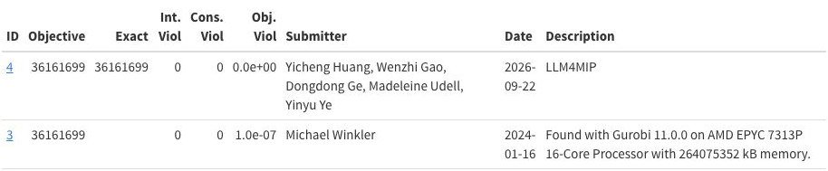
supportcase39
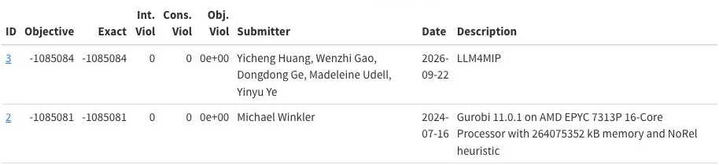